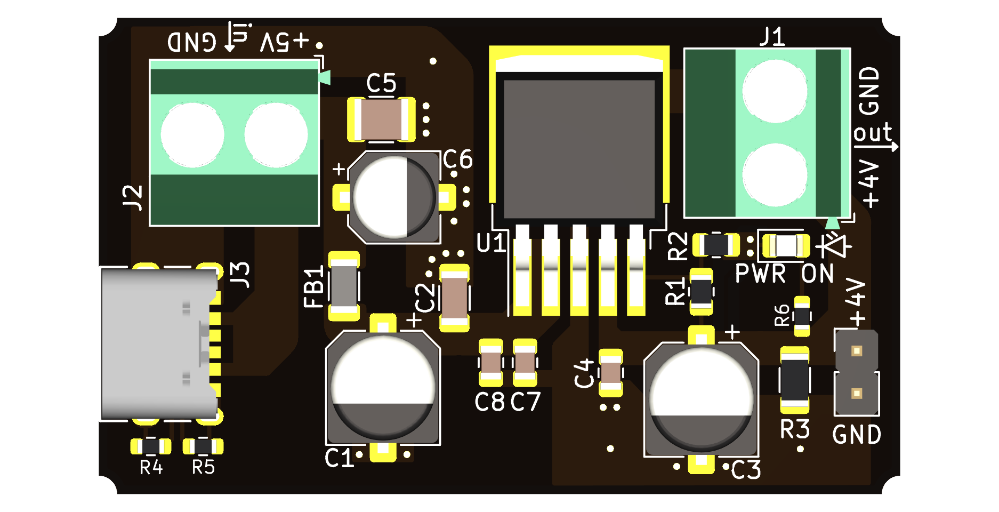
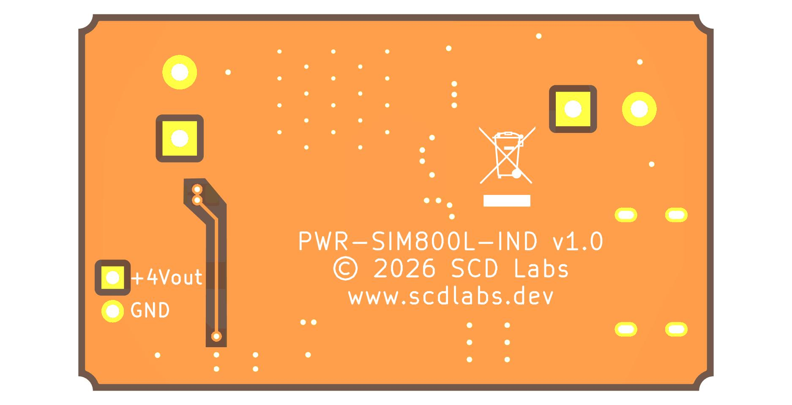
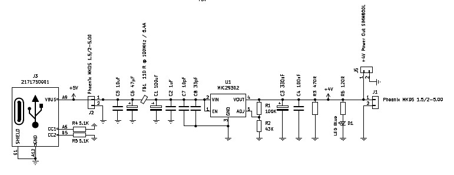

Utilizzo e Applicazione

Il modulo cellulare SIM800L è ampiamente utilizzato in applicazioni di telemetria e controllo remoto, ma presenta una severa criticità elettrica: durante i picchi di trasmissione (*burst GSM*), il chip richiede impulsi di corrente improvvisi e molto intensi (fino a 2A). Se la linea di alimentazione non è perfettamente stabile e reattiva, si verificano inevitabili cadute di tensione che causano il riavvio continuo del modem o il blocco improvviso dell'intero impianto.
PWR-SIM800L-IND nasce esclusivamente per risolvere questo problema. È un modulo di alimentazione ingegnerizzato per interporsi tra la sorgente di energia principale e il modem GSM, garantendo un flusso di tensione lineare, privo di ripple e strutturato per assorbire istantaneamente qualsiasi transitorio di carico strutturale.
Ingegnerizzazione del Layout e Contenimento EMI

La durata e l'affidabilità di un circuito elettronico industriale dipendono direttamente dalla qualità del suo sbroglio meccanico ed elettrico. Nella progettazione di questo modulo, ogni traccia è stata ottimizzata per abbattere le criticità ad alta frequenza e isolare i disturbi di commutazione:
IL FATTORE DIFFERENZIANTE: Filtro EMI a Pi-Greco (π)
A differenza delle schede di fascia bassa (e di molti prodotti standard di mercato) che collegano direttamente la linea di alimentazione al carico, il PWR-SIM800L-IND integra un filtro EMI a pi-greco (π-filter) bidirezionale completo. Questa cella di filtraggio accoppia simmetricamente due stadi capacitivi a ridosso di un'induttanza di potenza su ferrite Würth Elektronik.
Il filtro agisce in duplice modo: abbatte radicalmente il ripple residuo in ingresso e impedisce al rumore impulsivo ad alta frequenza (generato dai burst GSM a 217 Hz) di risalire la linea di alimentazione, proteggendo la logica di controllo principale (MCU, sensori) da anomalie o reset indotti da disturbi condotti.
- Riduzione di Induttanze e Capacità Parassite: I percorsi di ritorno della corrente e le geometrie delle tracce di potenza sono stati ridotti al minimo indispensabile per prevenire ringing di tensione e minimizzare le reattanze parassite del circuito stampato durante i transitori veloci.
- Piazzole di Disaccoppiamento RF per Frequenze GSM (Opzionali): Il layout prevede la predisposizione di due piazzole d'ingombro addizionali (C7-C8), posizionate strategicamente direttamente a ridosso dei pin di ingresso del regolatore lineare U1. L'utente ha la facoltà di installare due condensatori ceramici ultra-veloci (MLCC) di tipo NPO/COG (package 0603/0805) calibrati sui rispettivi punti di autorisonanza: un valore indicativo di 33-39 pF per la portante a 900 MHz e di 8.5-10 pF per la banda a 1800 MHz. Configurati in parallelo tra il Pin 2 (Vin) e il Pin 3 (GND) del MIC29302WU, questi condensatori ceramici sono tarati per fornire un cammino a bassa impedenza verso massa per le frequenze portanti GSM a 900 MHz e 1800 MHz, prevenendo fenomeni di demodulazione RF all'interno dello stadio di regolazione. Questo stadio opzionale permette di azzerare i disturbi a radiofrequenza direttamente alla fonte, impedendo che le piste di potenza irraggino rumore elettromagnetico verso i circuiti logici adiacenti.
- Tecnologia MLCC X7R per la Stabilità di Linea: Il filtro a pi-greco d'ingresso e gli stadi di disaccoppiamento (sia in entrata che in uscita del regolatore LDO Microchip) utilizzano rigorosamente condensatori ceramici multistrato (MLCC) con dielettrico X7R in package standardizzato. Questa scelta garantisce un'elevata densità capacitiva unita a una stabilità termica industriale (da -55°C a +125°C), ideale per livellare il ripple a media frequenza e garantire che l'LDO lavori sempre in un regime di tensione lineare e privo di oscillazioni parassite.
- Piani di Massa Generosi: Il layout utilizza piani di rame ad alta superficie sia sul livello top che sul bottom. Questa soluzione agisce come uno schermo elettrostatico continuo, stabilizza il potenziale di riferimento e ottimizza la dissipazione termica del regolatore, garantendo un'operatività costante ben al di sotto dei limiti di tolleranza termica dei componenti.
Struttura del Rame e Piano di Massa Inferiore

La visualizzazione del rame sul livello inferiore (*Bottom Layer*) evidenzia un piano di riferimento solido e continuo, progettato per garantire una schermatura ottimale contro i disturbi accoppiati e una via di ritorno a bassissima impedenza per i forti transitori di corrente del modulo GSM.
Ingegneria del Segnale - Focus sul Partitore:
Per preservare la massima precisione della tensione d'uscita, è stata isolata una specifica traccia di massa racchiusa in una zona di svuotamento (*island routing*). Questa soluzione scollega la massa di riferimento del partitore di regolazione dai flussi di corrente caotici del piano principale, convogliandola direttamente sul piedino del condensatore ai polimeri d'uscita. In questo modo, il feedback legge il potenziale nel punto di massimo filtraggio, azzerando l'effetto dei disturbi di commutazione (*ground bounce*).
Gestione dell'Energia e Capacità Esterna
Il modulo integra già a bordo uno stadio di accumulo ultra-reattivo basato su condensatori polarizzati ai polimeri solidi Panasonic. Questa scelta progettuale si interpone come barriera fondamentale contro i repentini transitori di carico causati dal modem GSM.
ANALISI HARDWARE: Perché i Polimeri Solidi rispetto agli Elettrolitici?
Sebbene l'adozione di condensatori ai polimeri solidi Panasonic comporti un costo di distinta base (BOM) nettamente superiore rispetto ai classici elettrolitici in alluminio, le loro caratteristiche intrinseche li rendono l'unica scelta accettabile per un'applicazione industriale permanente:
- ESR nei Milliohm (Resistenza Seriale Equivalente): I polimeri solidi offrono un'ESR drasticamente inferiore rispetto agli elettrolitici liquidi. Questo permette al condensatore di scaricare la corrente necessaria per i burst da 2A del SIM800L in modo istantaneo, azzerando le cadute di tensione locali che causano i riavvii del firmware.
- Immunità all'Asciugamento (Dry-out): I condensatori tradizionali contengono un elettrolita liquido che, con il passare degli anni e il calore operativo, evapora inevitabilmente provocando il guasto della scheda. Nei polimeri solidi l'elettrolita è un materiale conduttivo solido: non c'è liquido che possa evaporare, garantendo un'aspettativa di vita operativa virtualmente illimitata.
- Stabilità Termica Assoluta: Al diminuire della temperatura, i condensatori elettrolitici standard subiscono un crollo della capacità e un aumento verticale dell'ESR. La tecnologia Panasonic mantiene invece prestazioni stabili da -55°C a +105°C, rendendo il modulo ideale per installazioni IoT esposte ad ambienti esterni severi.
Per installazioni soggette a linee di alimentazione principali particolarmente lunghe o per impieghi in zone con scarsa copertura di segnale (dove il modem è costretto a trasmettere alla massima potenza RF), rimane comunque consigliato prevedere un ulteriore serbatoio capacitivo a ridosso del modulo.
💡 Raccomandazione di Progetto:
Si consiglia il posizionamento in parallelo di un condensatore elettrolitico addizionale con una capacità compresa tra 470 µF e 1000 µF (Low-ESR), o idealmente un ulteriore elemento ai polimeri solidi da almeno 6.3V. Questo componente agisce come riserva energetica rapida di supporto per assorbire completamente il ripple residuo durante i burst GSM.
Architettura dello Schema Elettrico

La filosofia di progettazione del PWR-SIM800L-IND si basa sul principio della massima stabilità operativa. Per questo motivo, la sezione di regolazione e la rete di feedback analogica ricalcano fedelmente il reference design ufficiale raccomandato dal produttore (SimCom), garantendo la totale aderenza alle specifiche elettriche nominali del costruttore del chip.
L'OTTIMIZZAZIONE DI SCD LABS:
Mentre i circuiti di valutazione standard si limitano all'implementazione base, questo schema introduce un netto upgrade sul fronte dell'immunità ai disturbi:
- Filtro EMI d'Ingresso Integrato: È stata inserita una cella a pi-greco completa direttamente sulla linea di alimentazione principale. Questa aggiunta, assente nei moduli commerciali generici, isola lo stadio di potenza dai transitori della rete esterna e scherma l'impianto dai disturbi di commutazione indotti dai burst del modem.
- LED di Stato Blu High-Tech: È stato integrato un LED di stato blu dedicato che monitora costantemente l'uscita del regolatore. Fornisce un feedback visivo immediato della presenza della tensione stabilizzata, fungendo da strumento diagnostico fondamentale durante i test in laboratorio o la manutenzione nei quadri industriali.
📄 Lo schema circuitale completo in formato PDF è consultabile nel Datasheet Tecnico.
Selezione della Componentistica
Per mantenere un profilo qualitativo industriale e preservare la massima aspettativa di vita del modulo, la selezione dei componenti interni è stata rigorosamente limitata a produttori leader del mercato globale, escludendo parti commerciali generiche:
| Sezione Hardware | Soluzione Implementata | Vantaggio Tecnico |
|---|---|---|
| Regolazione di Tensione | LDO ad alta corrente e basso dropout (Microchip) | Erogazione lineare della tensione con scarti millimetrici e alta stabilità di conversione. |
| Stadio Capacitivo Nativo | Condensatori polarizzati ai polimeri solidi Panasonic di alta qualità | ESR estremamente basso, assenza di degrado o asciugatura nel tempo, e stabilità termica assoluta nei transitori rapidi. |
| Filtraggio di Rete | Filtro EMI a Pi-greco (π) con ferrite di potenza (Würth Elektronik) e condensatori coordinati | Configurazione a bassissimo passaggio di rumore. Abbattimento mirato delle emissioni condotte ad alta frequenza e isolamento totale della linea di alimentazione principale. |
| Interfaccia di Alimentazione | Morsettiere e connettori ad alta tenuta meccanica (Phoenix Contact) | Contatto elettrico a bassissima resistenza di sfilamento, ideale per cablaggi industriali sicuri. |
| Ingresso Ausiliario 5V | Connettore d'interfaccia USB-C schermato (Molex) | Robustezza strutturale superiore alle sollecitazioni meccaniche di inserimento e ottima continuità di massa. |
Configurazione dell'Ordine
Seleziona la versione hardware e la dotazione di connettori più adatta alle esigenze del tuo progetto o del tuo impianto:
| 1. Versione Hardware | Dotazione Circuitale | Ambiente d'Uso Ideale |
|---|---|---|
| PWR-SIM800L-IND (PRO) | Architettura completa. Include filtro EMI a pi-greco, condensatori ai polimeri solidi Panasonic e piazzole di disaccoppiamento RF (NPO). | Applicazioni industriali h24, installazioni IoT esterne e quadri elettrici con logiche sensibili. |
| PWR-SIM800L-IND (LITE) | Versione essenziale sullo stesso PCB della PRO. Stesso regolatore Microchip, ma con condensatori standard, senza filtro a pi-greco (linea passante via 0Ω) e priva del LED di stato con relativa resistenza di limitazione (le piazzole rimangono esposte e libere per un'eventuale installazione custom). | Prototipazione rapida, banchi di test in laboratorio per hobbisti, maker e/o ambienti controllati. |
| 2. Opzione Connettori | Cosa riceverai nella confezione | Vantaggio Logistico |
|---|---|---|
| Kit Connettori Inclusi | La scheda elettronica assemblata in SMD viene fornita insieme alle morsettiere industriali Phoenix Contact, al connettore USB-C Molex ed ai pin-strip sfusi in busta (non montati). | Massima flessibilità di cablaggio mantenendo la componentistica originale di targa da saldare in autonomia. |
| Senza Connettori | Viene spedita la sola scheda elettronica assemblata in SMD. Le piazzole passanti rimangono completamente libere. | Profilo della scheda ultra-piatto, costi di spedizione minimi e libertà di saldare fili diretti o pin custom. |
Environmental Compliance & Sostenibilità
La scheda di valutazione PWR-SIM800L-IND è stata progettata utilizzando componenti e materiali specificati dai rispettivi produttori come conformi alla Direttiva 2011/65/UE (RoHS) e ai suoi successivi emendamenti.
Gli utenti che integrano questa scheda in prodotti commerciali rimangono responsabili della verifica della piena conformità normativa del prodotto finale assemblato.
⚠ TERMINI DI UTILIZZO E LIMITAZIONE DI RESPONSABILITÀ (KIT R&D)
Questo modulo elettronico è destinato esclusivamente ad attività di ricerca, sviluppo, prototipazione e valutazione in ambienti di laboratorio da parte di personale qualificato o hobbisti esperti.
Il modulo è un componente nudo, privo di involucro e non è da considerarsi un prodotto finito per uso domestico o commerciale generalizzato. Il produttore ha applicato le buone norme di progettazione elettronica, ma il modulo non è stato sottoposto a test formali di laboratorio per la marcatura CE/EMC.
Qualora l'acquirente decida di integrare questo modulo in apparecchiature o prodotti finiti destinati alla vendita, l'acquirente si assume la piena ed esclusiva responsabilità di eseguire tutti i test di conformità, sicurezza e compatibilità elettromagnetica richiesti dalle normative vigenti nel paese di destinazione.